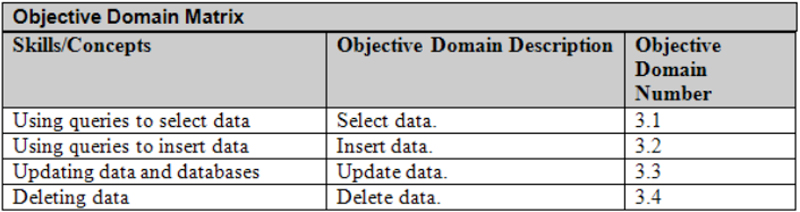

(DATABASE SYSTEMS CMP2060M)
Designer, Developer, Director & Senior Lecturer
A SQL query walks into a bar and sees two tables.
He walks up to them and asks, "Can I join you?"
Data Manipulation Language (DML)
Last week we was focused on SQL Data Definition Language (DDL)
Create Databases
Create / Alter Tables
Create / Alter Data Types
Create / Alter Constraints
All about the creation and structure of databases/tables/constraints, Not about the manipulation of the actual data in database
easy!
BASIC QUERIES
Create a DB
CREATE DATABASE accounts
Create Branch Table
CREATE TABLE branch (
B_name VARCHAR(30) NOT NULL,
Address VARCHAR(30) NOT NULL,
City VARCHAR(30) NOT NULL,
Assets DECIMAL(10, 2) NOT NULL);
Some added comma's B_name VARCHAR(30), NOT NULL
Create Customers Table
CREATE TABLE customers (
c_name VARCHAR(30) NOT NULL,
street VARCHAR(30) NOT NULL,
City VARCHAR(30) NOT NULL);
Write the SQL statement ALTER command for:
1 Adding or dropping a column (attributes) in the branch table
2 Changing a column definition in the customers table
ALTER TABLE customers MODIFY c_name CHAR(100);Alter Customers Table
ALTER TABLE Customers
ADD CONSTRAINT fk_Acc_number
FOREIGN KEY (Acc_number)
REFERENCES borrow (Acc_number);
ON UPDATE CASCADE
ON DELETE CASCADE
if you do not explicitly name your constraint phpmyadmin will!
Drop FK
ALTER TABLE Customers
DROP FOREIGN KEY fk_Acc_number
Standard Query Language Part 2 – Data Manipulation Language (DML)
Data Manipulation Language overview
SQL SELECT
Conditional Clauses
Operations/ Functions / Grouping
SQL INSERT / UPDATE / DELETE
Summary
Week 7: Intro to Cloud Storage (SQL-as-a-service)
Week 8: Standard Query Language - Data Definition Language (create database, tables, column etc)
Week 9: Standard Query Language - Data Manipulation Language (insert, select, delete etc. with JOIN, UNION and other relational queries)
Revision linked to this weeks lecture and workshop, content below available on BB under the MTA Section
Study Textbook Lesson 3
Study Guide Chapter 3
In short: You must implement your final database solution, via an SQL script, using the MySQL database platform and associated tooling.
you will develop a fully-functional SQL script file with the .sql extension. Upon execution, the .sql script must create your database structure using MySQL DDL statements with all required tables and integrity constraints
Data Manipulation Language (DML) is the language element of SQL which allows you to use core statements:
SELECT: Retrieves rows from the database and enables the selection of one or many rows or columns from one or many tables in the database;
INSERT: Adds one or more new rows to a table;
UPDATE: Changes existing data in one or more columns in a table;
DELETE: Removes rows from a table.
SELECT syntax
SELECT [column(s)] FROM [table list] WHERE [condition]
[column(s)] is a list of column names whose values are to be retrieved by the query, separated by commas
[table list] is a list of the table names required to process the query
[condition] is a conditional (Boolean) expression that identifies the condition to be retrieved by the query (optional)
SELECT (from adventure works DB)
SELECT title, hiredate FROM employee
WHERE hiredate >= '2000-01-0’
Output
SELECT ‘combining conditions’
SELECT title , hiredate, gender FROM employee
WHERE hiredate >= '2000-01-0’ AND gender = ‘F
Output
SELECT ‘BETWEEN’ clause
Retrieve records that satisfy a ‘range’ condition:
SELECT title , hiredate FROM employee
WHERE hiredate BETWEEN ‘1996-01-01’ AND '2000-01-01
Output
SELECT ‘NOT’ clause
SELECT * FROM department WHERE NOT name='Sales'
Output
SELECT *
SELECT * FROM employee
To retrieve all column values of the selected rows, a * stands for all the columns
Above query would produce a result that displays all columns / rows of data in the employee table
SELECT *
SELECT * FROM employee
To retrieve all column values of the selected rows, a * stands for all the columns
Above query would produce a result that displays all columns / rows of data in the employee table
SELECT - Arithmetic Operations
The standard arithmetic operators (+, -, *, /) can be applied to numeric values Example: Get the total value of sales from Sales Personnel this year, and compare to total for last year
SELECT SalesPersonID ,salesYTD – SalesLastYear FROM salesperson
Output
SELECT - Aggregate Functions
Includes COUNT, SUM, MAX, MIN, and AVG
Example: Find the minimum, maximum, and average sick hours among all employees:
SELECT MIN(SickLeaveHours), MAX(SickLeaveHours), AVG(SickLeaveHours) FROM EMPLOYEE
SELECT - Aggregate Functions
Includes COUNT, SUM, MAX, MIN, and AVG
Example: Retrieve the total number of employees in the company:
SELECT COUNT(*) FROM EMPLOYEE
SELECT - Aggregate Functions
You can use aggregate and arithmetic functions/operations together
Example: Get the value of all current bonuses for Sales Personnel and show the impact of a 10% bonus increase
SELECT SUM(bonus), SUM(bonus*1.1) FROM salesperson
Output
SELECT - Grouping
In many cases, you will want to apply aggregate functions to sub-groups of records in a table.
Each sub-group of records consists of the set of records that have the same value for the grouping attribute(s)
The function is applied to each subgroup independently
SQL has a GROUP BY clause for specifying the grouping attributes
The attributes for Group By must also appear in the SELECT clause at the beginning
SELECT - Grouping
Example: For each Sales employee, retrieve the number of orders they have achieved, and the average value of their orders:
Select SalesPersonID, COUNT(*), AVG(TotalDue) FROM salesorderheader GROUP BY SalesPersonID
The sales order records are divided into groups
Each group having the same value for the grouping column/attribute.
SELECT - Grouping
The COUNT and AVG functions are applied to each such group of records separately
The SELECT-clause includes only the grouping attribute and the functions to be applied on each group of records
SELECT - Grouping
Select SalesPersonID, COUNT(*), AVG(TotalDue) FROM salesorderheader GROUP BY SalesPersonID
breather (time depending)
SELECT – JOIN clause
The JOIN clause allows you to combine related data from multiple table sources:
INNER JOINS allow you to match related records taken from different source tables
OUTER LEFT or RIGHT JOINS can include records from one or both tables you are querying which do not have any corresponding record(s) to be found in the other table
INSERT (testdb database used)
The Insert statement is used to insert quantities (rows) of data into your database.
There are three things you need to ensure are identified in your statement to form a proper INSERT query:
Table name where data will be inserted
Column(s) to insert data into
Value(s) for specified column(s)
INSERT (testdb database used)
The Insert statement is used to insert quantities (rows) of data into your database There are three things you need to ensure are identified in your statement to form a proper INSERT query:
Table name where data will be inserted
Column(s) to insert data into
Value(s) for specified column(s)
INSERT syntax
INSERT INTO [table] [column list] VALUES [value list]
[table] the table name to insert data
[column list] is a list of comma separated column names for which data is to be inserted
[value list] is a list of comma separated values for each column
INSERT example (testdb department table)
INSERT INTO department (DNUMBER, DESCRIPTION) VALUES
('1', 'Human Resources'),
('2', 'Engineering'),
('3', 'Estates'),
('4','Enterprise'),
('5','Human Resources');
Output
INSERT example (testdb department table)
Insert 1 row
INSERT INTO employee (FNAME, LNAME, SSN, BDATE, ADDRESS, GENDER, SALARY, DNO)
VALUES ('Maddog','McGlinchey','abcdefg','1985-10-10','35 High St','m' ,'45000','2')
Output
INSERT example (testdb department table)
Insert 3 rows
INSERT INTO employee (FNAME, LNAME, SSN, BDATE, ADDRESS, GENDER, SALARY, DNO)
VALUES ('Jimmy' ,'McTavish','123456','1990-10-10','90 Bellgrove St','m','35000','2’),
('Pat','Riggerson','abs1234','1989-05-05','7 Alexander St','f','15000','2’),
( 'Wilma','Flintstone','xya1234' ,'1950-06-15','100 Monks Rd','f','45000','5');
Output
UPDATE (testdb database used)
The UPDATE clause allows you to modify the data which is stored in tables using column and data value attributes
There are three things you need to ensure are identified in your UPDATE statement:
[table] the table name where data is to be updated
[column / value list] is a list of comma separated column names and values containing the update data
[condition] is a conditional (Boolean) expression that identifies the condition to be updated
Update Syntax
UPDATE [table] SET [column / value list]
WHERE [condition];
If no condition is set, then then all records will be updated!
Update Syntax
This statement will modify the current primary key DNUMBER value of 2 to 6.
What will happen in employee table if above statement is run?
UPDATE department SET DNUMBER = '6' WHERE DNUMBER = '2
Output
DELETE (testdb database used)
The Delete statement is used to remove one or more rows in a specified table.
There are two things you need to ensure are identified in to form a proper DELETE statement:
Table where data will be deleted;
Condition on which data row(s) will be deleted;
DELETE (testdb database used)
The Delete statement is used to remove one or more rows in a specified table.
There are two things you need to ensure are identified in to form a proper DELETE statement:
Table where data will be deleted;
Condition on which data row(s) will be deleted;
DELETE Syntax
DELETE FROM [table] WHERE [condition];
If no condition is set, then then all records will be DELETED!
DELETE Syntax
Remove 1 row from the department table
DELETE FROM department WHERE DNUMBER = '2'
Output
DELETE FROM department WHERE DNUMBER = '2'
The above statement will remove the DNUMBER primary key value of 2 from the department table, which will impact the foreign key linked to it in the employee table
Currently, there are three employee records in the employee table who belong to department number 2
What will happen if the above statement is run?
CONSTRAINT fk_department_no FOREIGN KEY (DNO) REFERENCES DEPARTMENT (DNUMBER)
ON UPDATE CASCADE ON DELETE CASCADE);
The above statement will remove the DNUMBER primary key value of 2 from the department table, which will impact the foreign key linked to it in the employee table
By using ON UPDATE CASCADE and ON DELETE CASCADE when the DNO foreign key was created, it means modifications/deletions to DNUMBER in the department table will also be reflected in the employee table
ON UPDATE will change all rows in employee table with a DNO value of 2 to the updated value of 6
ON DELETE will simply remove all rows in the employee table with a DNO value of 2
TRUNCATE
The Truncate statement is used to remove all rows of data from a table, but leaves the table structure intact:
TRUNCATE TABLE employee;
Handy!
Doing this!